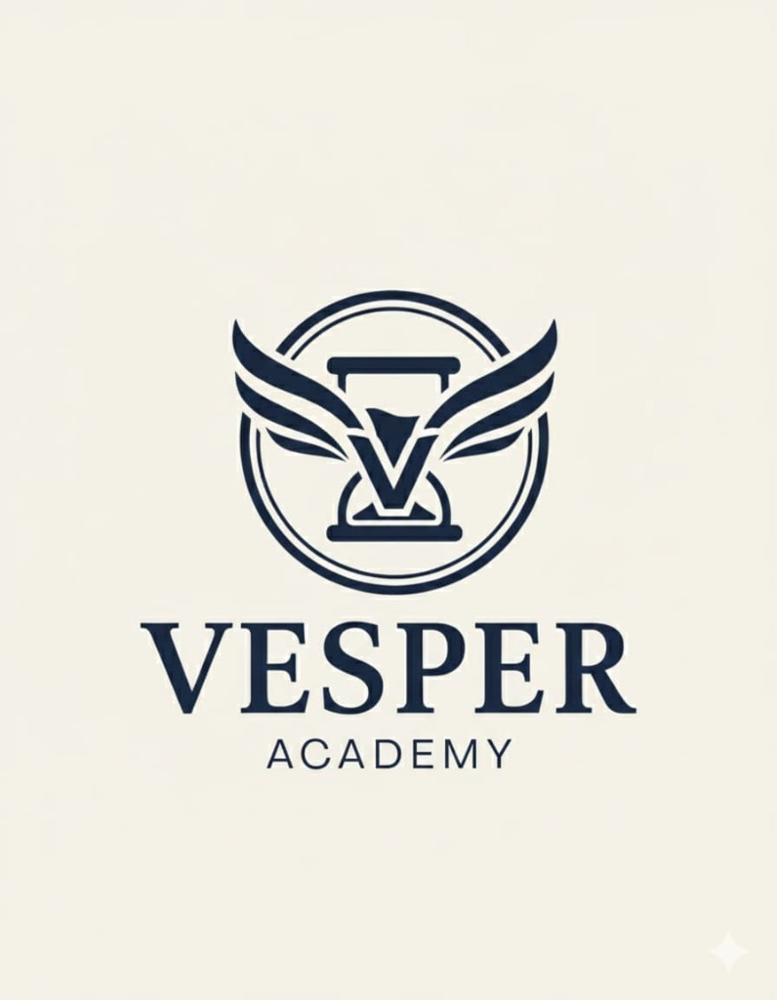

Daily Life English: Vol 2
Life Admin (B1)
Vesper Academy
Student Workbook
Daily Life English: Volume 2 (B1)
Course Overview:
Level B1 is Life Administration. This course targets "Adulting" skills: Banking, Housing, Medical, and Employment. The goal is independence in an English-speaking country.
Online Teaching Strategy:
- Document Simulation: Screen share a Lease Agreement or Visa Form. Annotate together.
- Complaint Handling: Roleplaying conflict resolution. "I demand a refund."
- Professional Emailing: Writing formal emails in the chat box. "Dear Sir/Madam..."
1. Renting an Apartment
Listing Scan:
Share Zillow/Rightmove screen. 'Find a flat for under $1000.' 'It's too small!'
1. Core Vocabulary:
LeaseLandlordTenantRentDepositUtilitiesFurnishedUnfurnishedStudioContractSignNoticeDamageInspectionBill
2. Concept:
1. Terms & Conditions:Understanding legalese on a lease.
2. Rights:I have the right to quiet enjoyment.
You cannot enter without notice.
The Lease Review:
Read a paragraph. 'Circle the hidden fee.' 'Wait, no pets allowed?'
The Viewing:
Landlord: 'It's cozy.' (Small). Tenant: 'Is there mold?' Negotiate the rent.
Daily Life English: Vol 2 • Page 4
2. Utilities & Bills
Bill Shock:
Show a $500 electric bill. 'Why is it so high?' 'You left the AC on.'
1. Core Vocabulary:
ElectricityGasWaterInternetProviderTariffMeterReadingDirect DebitOverdueDisconnectCustomer ServiceHoldReferencePayment
2. Concept:
Telephone English:Put you on hold.
Speak up, please.
I am cutting out.
Can I speak to a manager?
Setup Call:
'I moved in today. I need Wi-Fi.' 'Earliest appointment is Tuesday.' 'No, Monday!'
The Dispute:
Call the company. 'I paid this.' 'No record.' 'Check again.' Resolve or hang up.
Daily Life English: Vol 2 • Page 5
3. Dealing with Neighbors
The Noise Log:
Keep a diary. 'Monday 2AM: Dog barking.' 'Tuesday 4AM: Techno music.'
1. Core Vocabulary:
NoisePartyMusicWallFenceParkingRubbishBinComplainApologizePoliteRudeIgnoreKnockNote
2. Concept:
Diplomatic Language:Direct: 'Stop the music.' (Rude).
Soft: 'Would you mind turning it down?' (Polite).
The Passive Aggressive Note:
Write a note for the hall. 'Someone left their trash. Please remove it :)'
The Doorstep Confrontation:
Knock knock. 'Hi, sorry, your dog is barking.' Neighbor denies it. 'I don't have a dog.'
Daily Life English: Vol 2 • Page 6
4. DIY & Repairs
IKEA Nightmare:
Show confusing instructions. 'What is Part A?' 'Where does the screw go?'
1. Core Vocabulary:
HammerScrewdriverDrillNailScrewPaintLadderLeakPipePlumberElectricianFixAssembleInstructionsTool
2. Concept:
Causative (Have something done):I fixed the roof (Myself).
I
had the roof fixed (Professional).
Quote Hunter:
Plumber A: $100. Plumber B: $500. Why? 'I am certified.' Choose one.
The Emergency:
Water is spraying everywhere (Mime). Call landlord. 'Help! The pipe burst!'
Daily Life English: Vol 2 • Page 7
5. Waste & Environment
Sort the Trash:
Screen share pile of junk. Drag to Blue Bin (Recycle) or Black Bin (Trash).
1. Core Vocabulary:
RecycleBinTrashGarbagePlasticGlassPaperCompostCollectionScheduleDumpLitterFineEnvironmentGreen
2. Concept:
Modals of Obligation:You
must recycle glass.
You
can't put batteries in the bin.
The Calendar Check:
'When is bin day?' 'Tuesday is Green Bin. Thursday is Black Bin.'
The Fine:
Council Inspector: 'You put pizza in the recycling. $50 fine.' Resident: 'It wasn't me!'
Daily Life English: Vol 2 • Page 8
6. Job Hunting
CV Roast:
Show a bad CV (Comic Sans font, selfie photo). Critique it. 'Remove the picture!'
1. Core Vocabulary:
ResumeCVCover LetterApplyPositionVacancyRecruiterLinkedInSkillExperienceReferenceQualificationDegreeSalaryNegotiate
2. Concept:
Power Verbs (Resume):Managed team.
Increased sales.
Developed strategy.
Led project.
Headline Writer:
Write a LinkedIn Headline. 'Seeking opportunities in Marketing.'
The Phone Screen:
Recruiter calls. 'Tell me about yourself.' Keep it to 30 seconds.
Daily Life English: Vol 2 • Page 9
7. Job Interviews
Body Language:
Teacher sits badly (slouching). 'Fix me.' Sit up straight. Smile.
1. Core Vocabulary:
InterviewWeaknessStrengthQuestionAnswerPanelCandidateHireFireConfidentNervousSuitTieOfferContract
2. Concept:
STAR Method:Situation.
Task.
Action.
Result.
Weakness Spin:
'What is your weakness?' 'I work too hard.' (Bad). 'I am perfectionist.' (Better).
The Panel:
3 Interviewers. 1 Candidate. Rapid fire questions. 'Why should we hire you?'
Daily Life English: Vol 2 • Page 10
8. Office Dynamics
Inbox Zero:
Screen share inbox list. Highlight 'Urgent' emails. Delete 'Spam'.
1. Core Vocabulary:
MeetingAgendaMinutesTeamProjectDeadlineUrgentEmailCCBCCReply AllAttachmentPrinterColleagueBoss
2. Concept:
Email Etiquette:Dear Mr Smith (Formal).
Hi John (Informal).
Best Regards vs Cheers.
Don't Reply All!
Meeting Interruptions:
'Can I jump in here?' 'Sorry to interrupt.' Polite turn-taking.
The Mistake:
You sent a rude email to the boss by accident. Apologize immediately.
Daily Life English: Vol 2 • Page 11
9. Payroll & Taxes
Pay Day:
Look at sample payslip. 'Where did my money go?' Calculate the tax.
1. Core Vocabulary:
PayslipSalaryWageGrossNetTaxDeductionBonusPensionInsuranceBankDetailsRaisePromotionIncome
2. Concept:
Numbers & Percentages:Gross is before tax.
Net is what you get.
20% deduction.
Asking for a Raise:
'I have worked here 3 years.' 'I deserve 10%.' Justify value.
HR Meeting:
'There is a mistake in my pay.' 'Let me check.' 'You missed a day.' 'I was sick!'
Daily Life English: Vol 2 • Page 12
10. Work-Life Balance
Stress Meter:
Rate stress 1-10. discuss causes. 'Commuting is a 9.'
1. Core Vocabulary:
StressBurnoutOvertimeHolidayLeaveSick dayRemoteHome OfficeFlexibleHoursBreakLunchQuitResignRelax
2. Concept:
Phrasal Verbs (Work):Burn out (Exhausted).
Call off (Cancel).
Clock out (Finish).
OoO Message:
Write 'Out of Office' auto-reply. 'I am currently on holiday...'
The Resignation:
'I quit.' 'Why?' 'I found a better job.' 'We will counter-offer.' 'Too late.'
Daily Life English: Vol 2 • Page 13
11. Banking & Finance
Scam Spotter:
Read an SMS. 'Click here to verify bank.' Is it real? No, it's a scam.
1. Core Vocabulary:
CreditDebitLoanMortgageInterestRateDebtSavingsInvestmentFraudStatementBalanceOverdraftFeeBanker
2. Concept:
Conditions (Unless/If):We will charge a fee
unless you pay now.
If you save, you earn interest.
Loan Shark:
Compare two loans. APR 5% vs APR 50%. Calculate the cost.
Lost Card:
Call bank. 'Cancel my card.' 'Checking ID... What is your mother's maiden name?'
Daily Life English: Vol 2 • Page 14
12. Insurance Claims
The Crash:
Draw a diagram of a car crash. 'Who is at fault?'
1. Core Vocabulary:
PolicyClaimPremiumExcessCoverDamageTheftAccidentFormEvidencePhotoWitnessReportApproveReject
2. Concept:
Passive Voice (Formal Reports):The car
was stolen.
The window
was broken.
(Focus on event, not person).
Claim Form:
Narrate the event. 'I was driving north. He hit me.'
The Adjuster:
'Your policy does not cover flood.' 'But it rained!' 'Sorry, read the small print.'
Daily Life English: Vol 2 • Page 15
13. Police & Crime
999 Call:
Teacher acts operator. 'Police, Fire, or Ambulance?' 'Police! Someone is breaking in!'
1. Core Vocabulary:
PoliceOfficerCrimeTheftAssaultVictimWitnessSuspectArrestStatementCourtLawyerJudgeGuiltyInnocent
2. Concept:
Reporting Verbs:He
claimed that...
She
denied stealing.
I
admit nothing.
Witness Description:
Describe the thief. 'Hoodie. Jeans. Limping.'
Interrogation:
'Where were you?' 'I was at home.' 'Can you prove it?' 'Check my phone.'
Daily Life English: Vol 2 • Page 16
14. Healthcare System
Body Map:
Point to Organs. 'Where is the Liver?' 'Where are the Lungs?'
1. Core Vocabulary:
GPHospitalEmergencyAppointmentReferralSpecialistInsuranceCopayPrescriptionSurgeryWardNursePatientWaitResult
2. Concept:
Medical English:Symptoms vs Diagnosis.
Chronic vs Acute.
Side effects.
Triage Nurse:
Patient A: Bleeding (Urgent). Patient B: Cough (Wait). Prioritize.
The Doctor Visit:
'It hurts when I breathe.' 'Take a deep breath.' 'Sounds like an infection.'
Daily Life English: Vol 2 • Page 17
15. Driving & Cars
Sign Quiz:
Show road signs. 'No Entry.' 'Yield.' 'One Way.'
1. Core Vocabulary:
LicenseTestCarEngineTireBrakeClutchGearSpeedLimitTicketFineTrafficJamPark
2. Concept:
Rules of the Road (Must/Mustn't):You
must stop at red.
You
mustn't text and drive.
The Mechanic:
Describe the sound. 'It goes clunk clunk.' 'It's the exhaust.'
Driving Test:
Examiner (Camera check): 'Look in mirror.' 'Signal left.' 'Emergency Stop!'
Daily Life English: Vol 2 • Page 18
16. Events & Parties
Party Planner:
$500 budget. Buy food, drink, decor. 'Champagne is too expensive.'
1. Core Vocabulary:
InvitationRSVPGuestHostVenueCateringMusicDateTimeDress CodeGiftSpeech CelebrateBirthdayWedding
2. Concept:
Formal Invites:We request the pleasure of your company.
RSVP by Friday.
Small Talk:
'How do you know the bride?' 'We met at work.'
The Wedding Toast:
Make a speech. Funny but polite. Raise glass.
Daily Life English: Vol 2 • Page 19
17. Complaints & Returns
Karen Mode:
Act out an angry customer. 'I want to speak to the manager!'
1. Core Vocabulary:
ComplainReturnRefundExchangeManagerReceiptFabricFaultyBrokenShrinkFadeColorServiceRudeSolve
2. Concept:
Conditionals (2nd):If I were you, I would return it.
I would be happy if you fixed it.
Email Complaint:
Write clearly. 'I bought X. It broke. I want Y.'
Customer Service:
Agent: 'I can't refund cash.' Customer: 'That is unacceptable.' Escalation.
Daily Life English: Vol 2 • Page 20
18. Travel Problems
Airport Announcement:
Teacher mumbles on mic. 'Bing bong... flight 404... delayed.' 'What did he say?'
1. Core Vocabulary:
DelayCancelMissFlightLuggageLostPassportVisaCustomsSecurityGateBoardingSeatEconomyUpgrade
2. Concept:
Past Perfect:When I arrived, the plane
had left.
My bag
had been stolen.
Claim Comp:
Flight delayed 4 hours. Fill out form for EUR 250 compensation.
Passport Control:
Officer: 'Purpose of visit?' 'Business.' 'How long?' '3 days.' 'Stamp.'
Daily Life English: Vol 2 • Page 21
19. Networking
Handshake fail:
Discuss bad handshakes (Wet fish, Bone crusher).
1. Core Vocabulary:
NetworkContactConnectionCardintroduceIndustryEventConferenceChatCoffeeFollow upEmailProposalClientPartner
2. Concept:
Elevator Pitch:Who are you?
What do you do?
Why do I care?
(In 30 seconds).
Business Card exchange:
Read card. Ask question about logo or address.
The Mixer:
Room full of strangers. Goal: Get 3 contacts. 'Hi, I'm with Vesper Tech.'
Daily Life English: Vol 2 • Page 22
20. GRADUATION: Adulting
Life Timeline:
Draw your future. 2030: CEO. 2040: Retire. 2050: Space.
1. Core Vocabulary:
IndependentConfidentSkillAchievementFuturePlanRetireMoveAbroadLanguageFluencyMasteryContinueStopLife
2. Concept:
Future Perfect:By next year, I
will have finished B2.
I will have moved house.
Advice to Self:
Write letter to past self. 'Don't worry about the visa.'
The Farewell:
Final speech. 'I am ready for the world.' 'Thank you teacher.'
Daily Life English: Vol 2 • Page 23